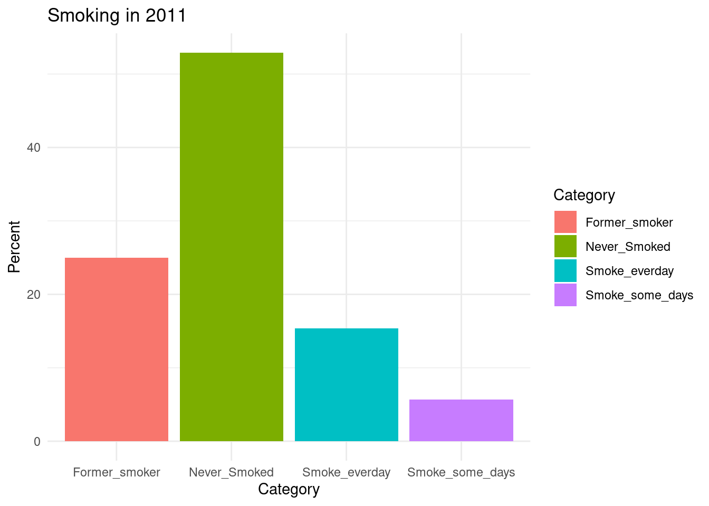
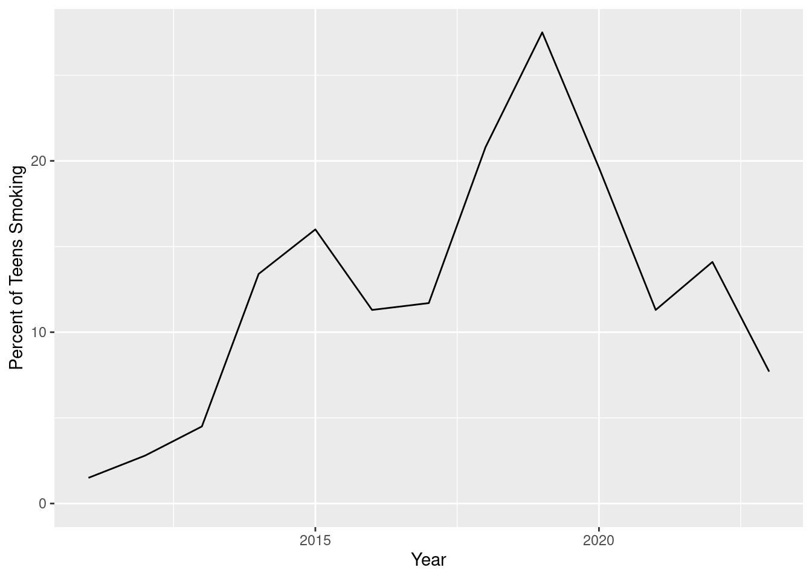
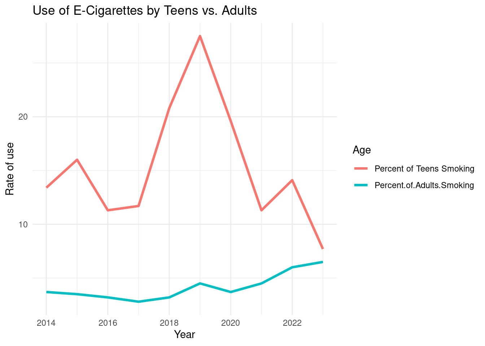
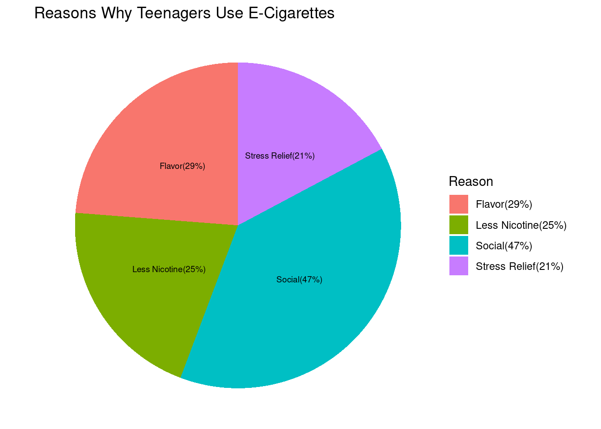

According to the American Lung Association, cigarette smoking rates have fallen significantly for both adults and youth since the 1990s. Since 2002, there have been more former smokers than current smokers and more than half of cigarette smokers have quit. However, the National Institute of Health has found that the rate of e-cigarette use has increased from 1.5% in 2011 to 20.8% in 2018. Our goal of this project is to compare cigarette use to e-cigarette use in America. We aim to see age groups smoke the most as the health repercussions smokers face. We aim to answer the question of how the rate of Americans smoking cigarettes has changed overtime and how the creation of e-cigarettes has impacted those rates.
According to the CDC, more than 480,000 deaths annually are connected to smoking. It is important to understand the changes in smoking rates as it helps us understand how addiction to nicotine is changing shape and how it can tackled. It is also important to understand smoking rates in the United States as it helps us understand the new risks that might develop as smoking and e-cigarettes change overtime. While smoking in the United States as decreased over time, it is still important to understand how it has changed over time so we can understand how people are continuing to become addicted and who is the most impacted.
Data
The first data that we wanted to explore was the amount of people who still smoke cigarettes in the 21st century. We chose the year 2011 as it had the most readily available dataset. As one can see, a majority of the people surveyed had never smoked before and the second highest number was former smokers.This graph shows that despite the fact that smoking cigarettes was once very popular amongst Americans, it has ver much declined in popularity.
National <-data.frame(Year =2011,Smoke_everday =15.4,Smoke_some_days =5.7,Former_smoker =25.0,Never_Smoked =52.9)long_data <- National %>%pivot_longer(cols =-Year, names_to ="Category", values_to ="Value")ggplot(long_data, aes(x = Category, y = Value, fill = Category)) +geom_bar(stat ="identity") +labs(title ="Smoking in 2011",x ="Category",y ="Percent" ) +theme_minimal()

We also aimed to explore how the rate of smoking cigarettes has changed over time in America. As demostrated by the previous graph, smoking used to be popular in America, a fact that has changed over time. As predicted, the graph, which shows the national smoking rates in America from 1995 to 2010, demonstrates that the percentage of people smoking cigarettes in America has declined overtime. The graph shows that, on average, the amount of smokers has been declining steadily and this decline sped up somewhere around the year 2003. There are the occasional spikes in the line, showing the occasional year in which rates increased. One can reasonably infer that a big contributor to this trend is the increased regulations on smoking, such as smoke-free laws being passed in states like Delaware in the 2000s. However, as will be shown in the data discussed, the point in which smoking cigarettes hit its lowest is also the point in which smoking e-cigarettes started gaining popularity.
We then aimed to see how cigarette use rates could be compared between adults and teenagers. We used data from the National Lung Association to show this difference. As you can see, the teenager demographic typically had more smokers than the adult age group. This table provides insight into who are the primary users of cigarettes. It also shows the difference between the percent of teenagers smoking cigarettes and adults smoking cigarettes. While the difference in average isn’t extremely large, it does show that nicotine products have typically been used by teenagers more than other age demographics.
library(plotly)
Attaching package: 'plotly'
The following object is masked from 'package:ggplot2':
last_plot
The following object is masked from 'package:stats':
filter
The following object is masked from 'package:graphics':
layout
The map above provides a state by state analysis of cigarette smoking rates. As presented by the map, West Virginia has the highest percent of smokers at 26.8%, whereas Utah has the lowest percent of smokers at 9.1%. While the national average provides a good look into smoking rates and how they have changed over time, it is important to examine how smoking rates break up by state as it helps provide information as to what conditions lead people to smoke as well as what laws and regulations lead to a decrease in smoking.
Rows: 13 Columns: 2
── Column specification ────────────────────────────────────────────────────────
Delimiter: ","
dbl (2): Year, Percent of Teens Smoking
ℹ Use `spec()` to retrieve the full column specification for this data.
ℹ Specify the column types or set `show_col_types = FALSE` to quiet this message.
ggplot(Electronic_Data, aes(x = Year, y =`Percent of Teens Smoking`)) +geom_line() +expand_limits( y =0 ) +theme( legend.position ="none")

The graph above shows the percent of teenagers in America who used e-cigarettes from 2011 to 2023. In 2011 the percent of teens who used e-cigarettes was 1.5%. E-cigarette use amongst teenagers hit its highest point in 2019, with 27.5% of teenagers using e-cigarettes. According to the National Health Institute, the abrupt spike in teenage use of e-cigarettes in 2019 is contributed to the rise of the e-cigarette product JUUL and their “fun” flavors that are marketed towards a younger audience. When examined alongside the summary staistics, this graph shows that the year in which cigarette use hit its lowest, 2011, was also the same year that e-cigarette use that teenagers started using e-cigarettes at a noticeable rate. This shows that addiction to smoking has not necessarily declined and instead has just taken a new form.
# Keep data starting at 2014teen_data_filtered <- Electronic_Data %>%filter(Year >=2014)Adult_Electronic_Data <-read.csv("https://docs.google.com/spreadsheets/d/e/2PACX-1vQQL58TQVvSt4ymMtnNpKMs5jDNm63XYsULxwz4eclvkScSpqlEfbutoMv-QutQJY0WBNV0WdJ01QW3/pub?output=csv")# Merge These datasets and format them for a graphCombined_Electronic_Data <-left_join(Adult_Electronic_Data, Electronic_Data, by ="Year")Long_Electronic_Data <-pivot_longer(Combined_Electronic_Data, cols =c('Percent.of.Adults.Smoking', 'Percent of Teens Smoking'),names_to ="Age",values_to ="Rate")# Create a graphggplot(Long_Electronic_Data, aes(x = Year, y = Rate, color = Age)) +geom_line(size =1.2) +theme_minimal() +labs(title ="Use of E-Cigarettes by Teens vs. Adults",x ="Year",y ="Rate of use",color ="Age")
Warning: Using `size` aesthetic for lines was deprecated in ggplot2 3.4.0.
ℹ Please use `linewidth` instead.

We then aimed to compare the rate of e-cigarette use among teenagers with the rate of e-cigarette use among adults. Due to the fact that the National Health Interview Survey has very little data on adult use of e-cigarettes before the year 2014, we used 2014 as the starting point and did not use the data from the teen use of e-cigarettes from 2011 to 2013. As one can see, the percentage of adults who use e-cigarettes is considerably lower than the percentage of teenagers who use e-cigarettes. It is interesting to see that despite the percentage of adults smoking is considerably lower, there was still a small spike in 2019. This data shows that, like cigarettes, e-cigarettes are mostly used by teenagers.
Rows: 4 Columns: 2
── Column specification ────────────────────────────────────────────────────────
Delimiter: ","
chr (1): Reason
dbl (1): Percent
ℹ Use `spec()` to retrieve the full column specification for this data.
ℹ Specify the column types or set `show_col_types = FALSE` to quiet this message.
Reasons_Data <-data.frame(Reason =c("Flavor(29%)", "Less Nicotine(25%)", "Social(47%)", "Stress Relief(21%)"),Percent =c(29, 25, 47, 21))ggplot(Reasons_Data, aes(x ="", y = Percent, fill = Reason)) +geom_bar(stat ="identity", width =1) +coord_polar("y", start =0) +theme_void() +ggtitle("Reasons Why Teenagers Use E-Cigarettes") +geom_text(aes(label = Reason), position =position_stack(vjust =0.5), color ="black", size =2.5)

Given that teenagers use e-cigarettes more than adults, we wanted to exqmine what motivates teenagers to smoke. As you can see, a majority of teens take up smoking because friends smoke. Another interesting element of this graph is the fact that the second-most popular reason is the flavor of e-cigarettes. This is interesting as the flavor of nicotine products is unique to e-cigarettes. This corroborates the National Health Institutes study that showed that a large draw for teens in regard to using e-cigarettes is the “fun” flavors, a trait that is very different from traditional cigarettes. It is also very interesting to see that the other two reasons teens use e-cigarettes is that they have less nicotine than other tobacco products and create a “buzz” that leads to stress-relief. This is interesting because it has been proven that e-cigarettes contain an addictive amount of nicotine and have been proven to cause anxiety. This shows how smoking in America has changed over time and factors such as flavors has been used to draw people in. The graph also shows how many people believe the myths spread about e-cigarettes.
Findings
In conclusion, we found that e-cigarettes have become more popular than e-cigarettes in the past 15 years. While smoking rates seemed to have hit a low in 2011, it appears that the rise of e-cigarette products in the 2010s resulted in increased use of nicotine products. We have also found that teenagers have typically used nicotine products at higher rates than adults, and are using e-cigarettes at much higher rates than adults are. A large part of the reason that teenagers choose to use e-cigarettes is the appeal of the flavor as well as buying into common myths about e-cigarette use.
It’s important to note that while e-cigarettes are sometimes viewed as a safer alternative to cigarettes, they still pose significant health risks and are just as, if not more, addictive. The most popular nicotine products on the market as designed to appear as fun and almost candy-like. However, the reality is that these products are extremely addictive and using them can lead to very serious consequences. According to a report done by the Surgeon General, there are over 490,000 annual deaths attributed to smoking and second-hand smoke. In order to fight against this addiction, it is extremely important to understand how the trends of smoking have changed over time as well as how the product has changed. It is also important to understand what demographics are being hit the hardest and what keeps them addicted.